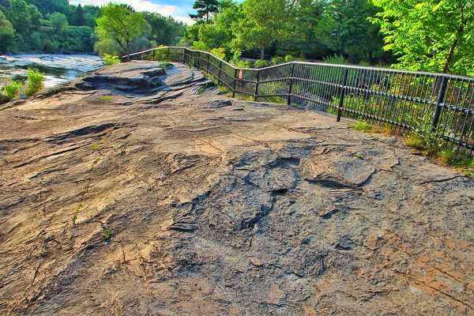
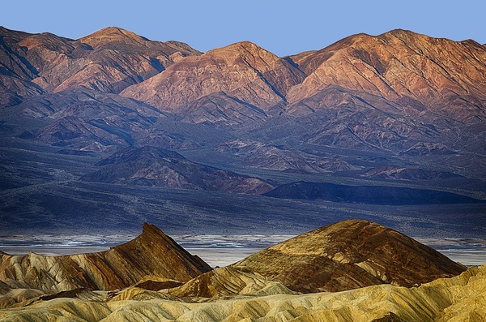
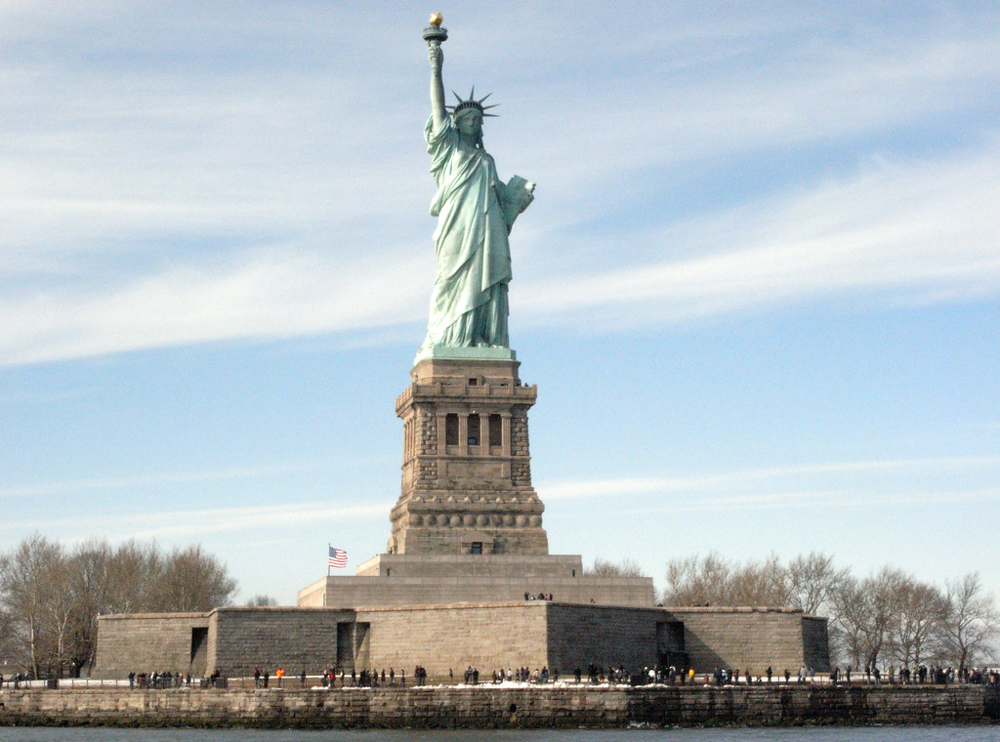

Attractions In The Usa
The USA is full of natural wonders. And man made wonders. Either way they are wonders and we have them all some are visiting Mt. Saint Hellens or going to New York.
Death Valley
Death Valley the deepest natrual structure in the US. Located in Callafornia it is 282 feet deep. It is the hottest and dryest place in the US. The hottest it's ever reached is 56 degrees celsius or 132.8 degrees fahrenheit!
The Statue Of Liberty
The Statue Of Liberty is a repesentation of our countries liberty from England. Located in New york, New York on an island it stands 305 feet tall. It is a must go.
These are just a few of the Amarican wonders.